Tattoo Booking
Custom tattoos designed around your story — fine line, bold traditional, script or full sleeves. Drawn with you, never off a wall chart.
Enquire →Hadapsar · Pune · Est. 16+ years
Your Story. Your Skin. Your Art.
Open all 7 days · 8:00 AM – 8:00 PM
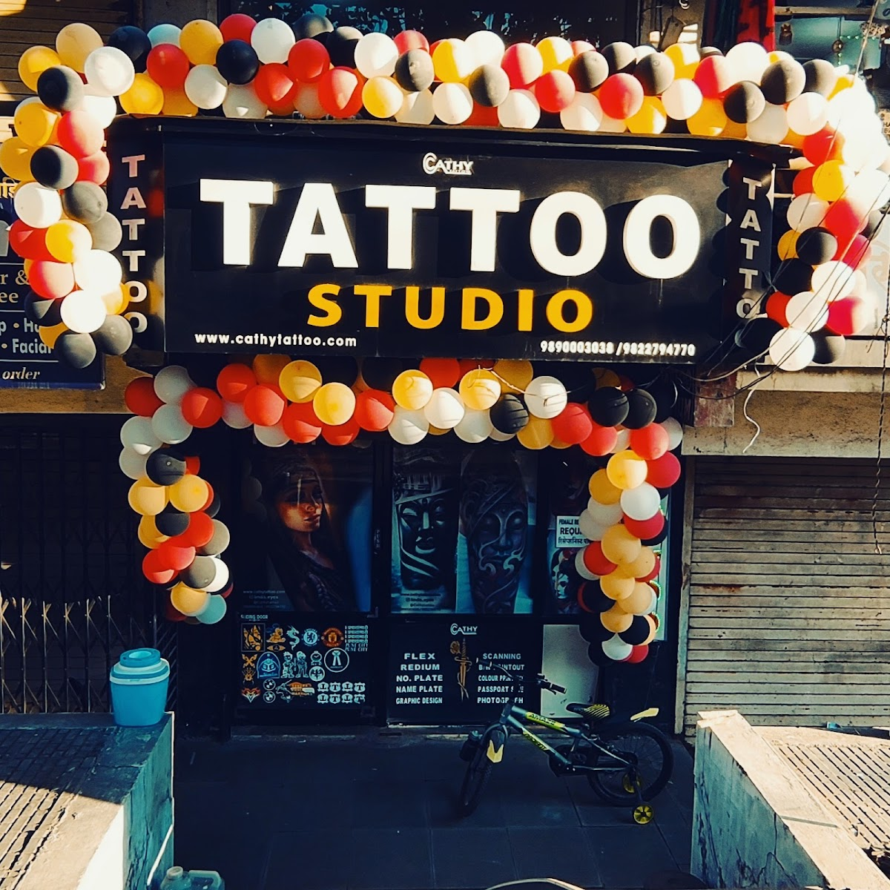
From the Owner · Today
“Ink Your Story with Precision & Passion. This Dussehra, celebrate with meaningful tattoos that symbolize courage and hope. Visit us for a personalized consultation and let your story shine.”Book a Consultation
The Portfolio
Every piece in this studio begins as a conversation. This is the studio's own work — photographed at the chair, never borrowed, never stock.
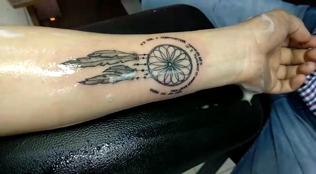
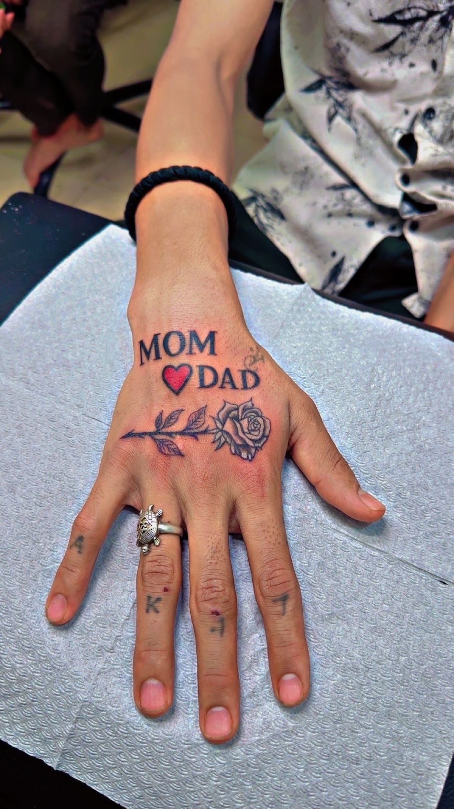
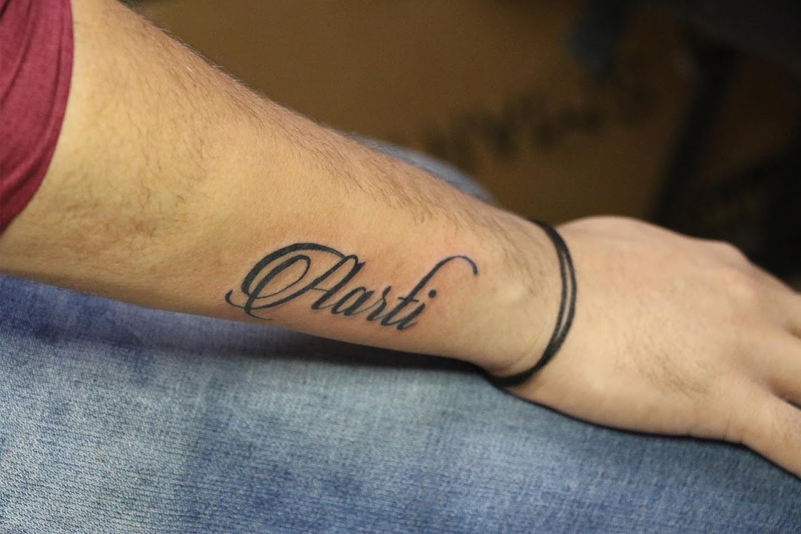
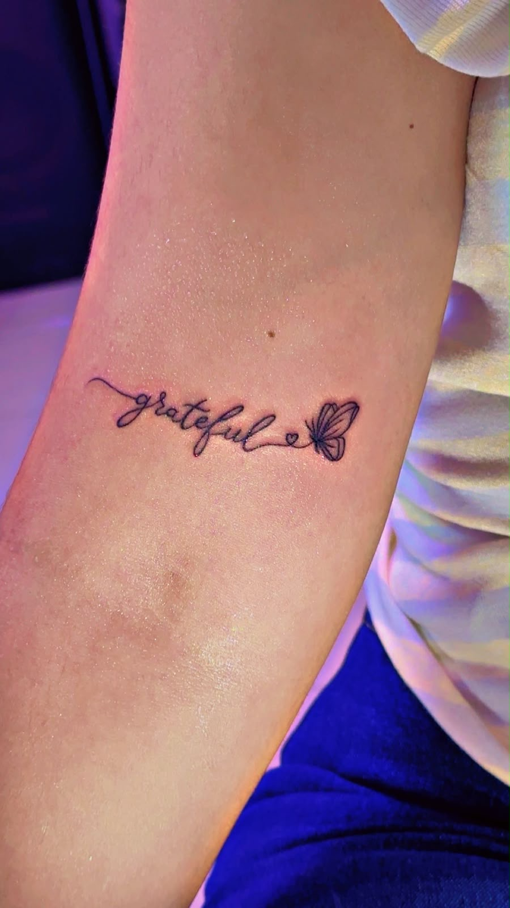
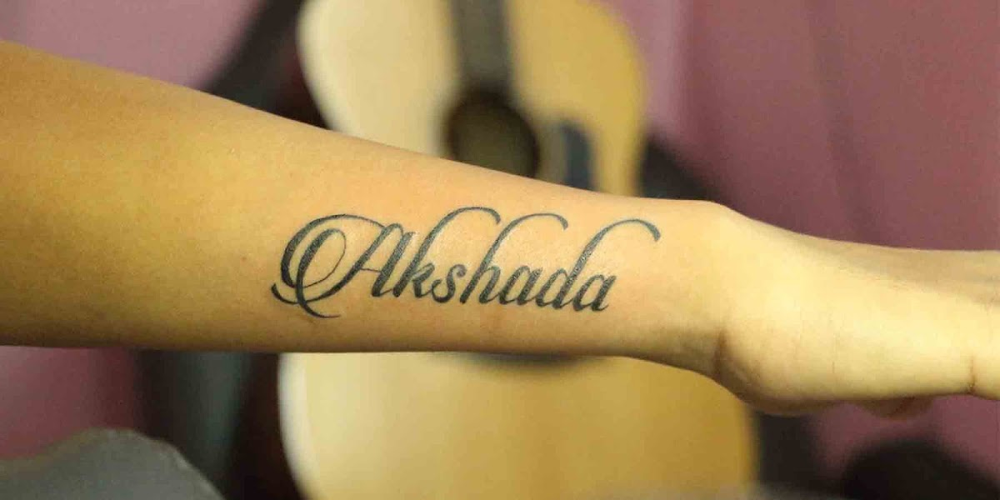
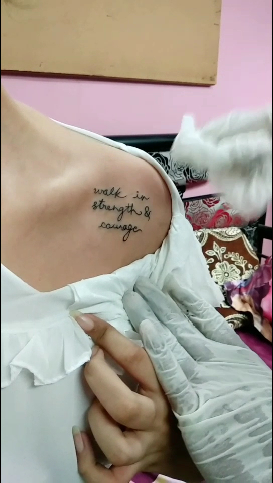
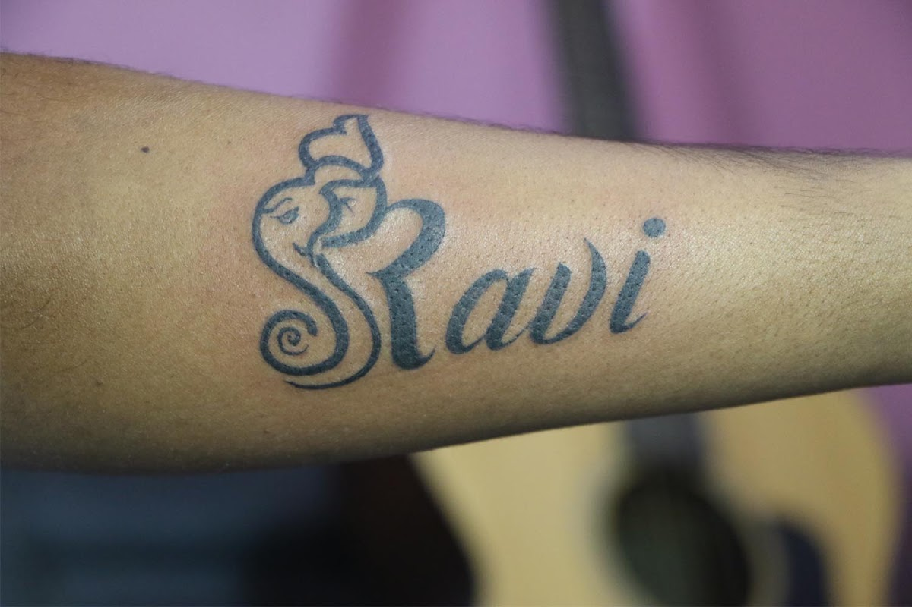
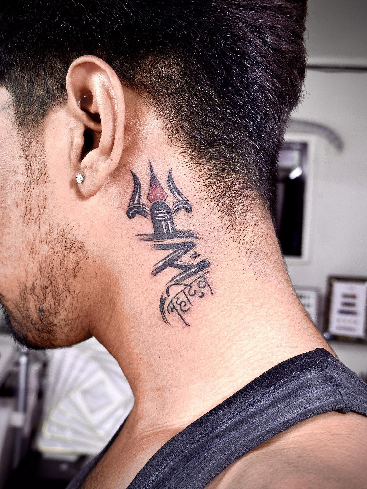
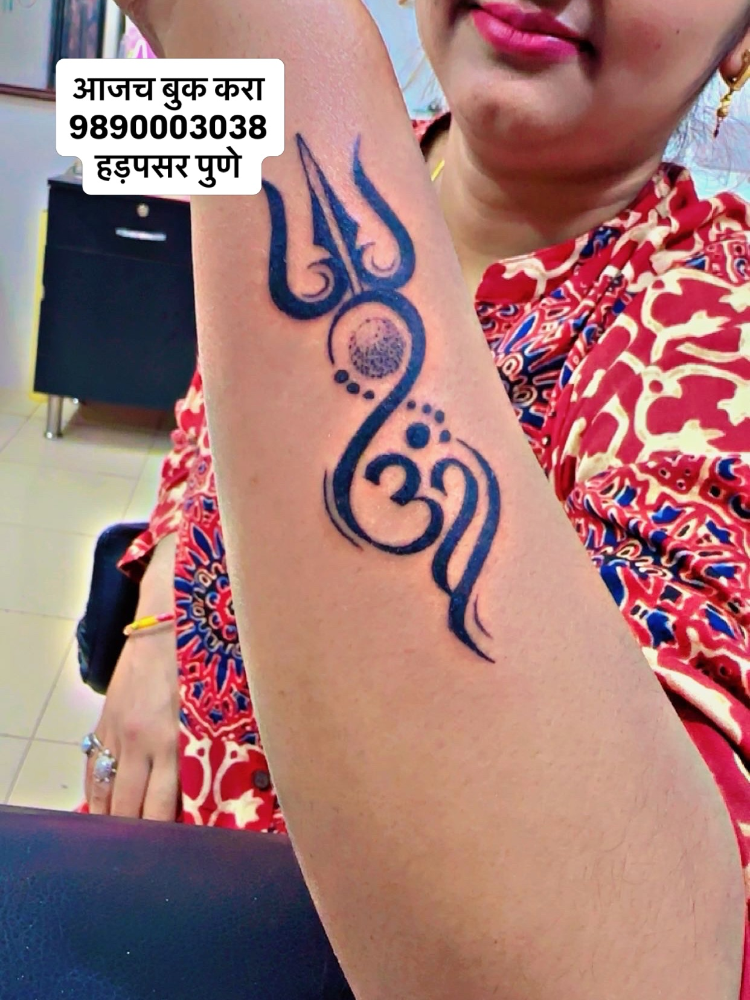
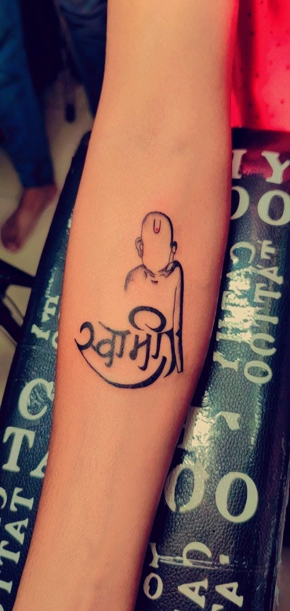
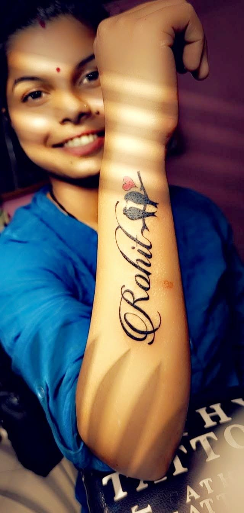
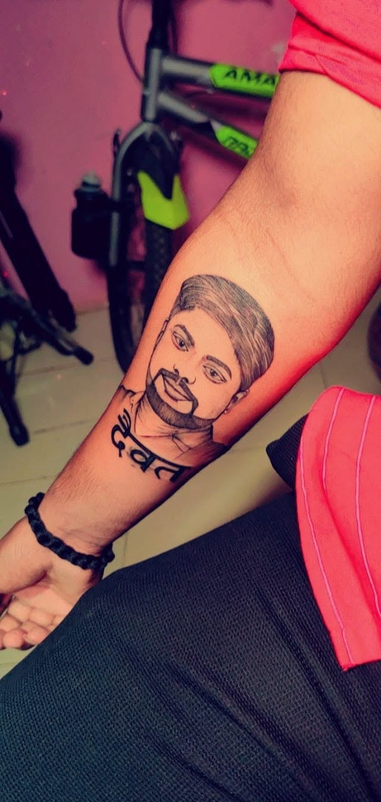
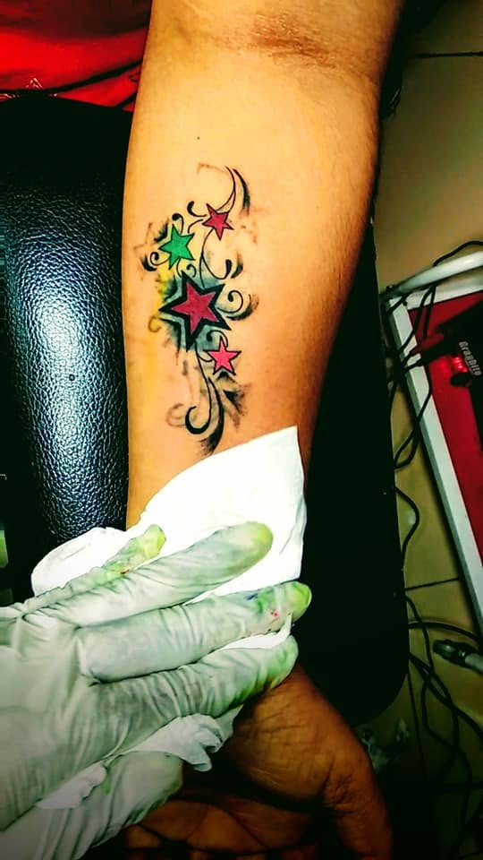
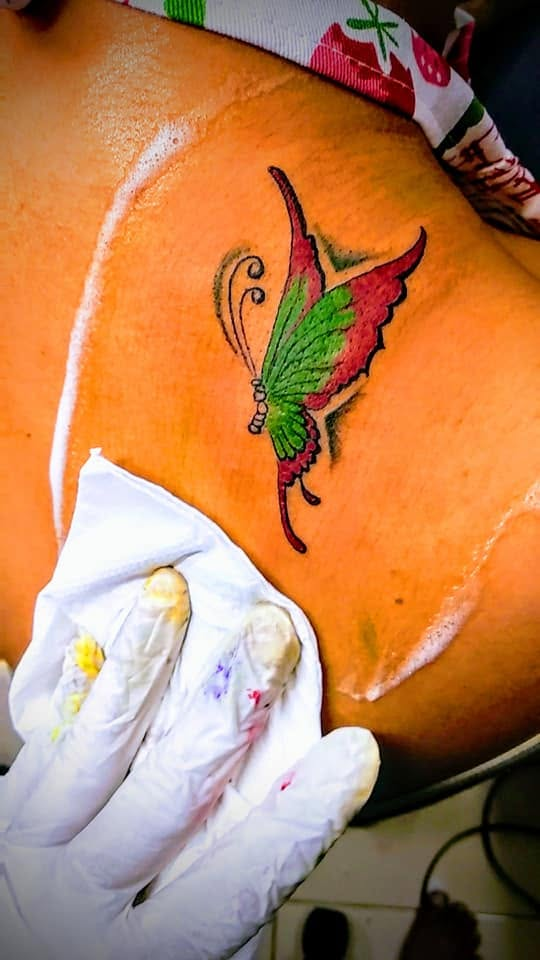
Signature Work
A cover-up is a second chance for your skin. The studio studies the existing tattoo — its lines, its fading, its meaning to you — and designs a piece that doesn't just hide the past, but outshines it.
Drag the handle — from in the chair to the finished result. (Two different sittings, shown for the journey — a matched cover-up before / after pair is coming from the studio.)
Nail Art & Extensions
From minimal everyday polish to full extension sets — nail art and nail extensions, finished with the same obsession for detail as the ink work.
Tattoo Removal
Removal is a process, not a magic wand — and the studio treats it that way. Your existing ink is assessed first: its age, depth and colour decide what's realistic, and you hear the honest picture before you spend a rupee.
17 reviews on the studio's Google listing mention tattoo removal — it's one of the most-asked-for services at the chair.
Thinking of a cover-up instead? Many clients fade first, then re-ink. The studio will tell you straight which road suits your skin.
Blood painting is one of the studio's most unusual commissions — artwork created with a small sample of your own blood, drawn and handled in-studio with the same hygiene discipline as the tattoo chair.
Consultation first, always — the artist explains the process before anything begins.
Blood Painting Art
Some stories are too personal for ink alone. Blood painting turns a portrait or symbol into a one-of-one artwork — quite literally a part of you, preserved on canvas. It's a service few studios offer, and one Cathy Tattoo has proudly listed for years.
Services
Custom tattoos designed around your story — fine line, bold traditional, script or full sleeves. Drawn with you, never off a wall chart.
Enquire →Changed your mind about a piece? Talk to the studio about removal options and honest expectations before you commit.
Enquire →Old names, faded ink, regret pieces — reimagined into artwork you actually want to show off.
Enquire →Hand-painted nail art and full extension sets — occasion-ready or everyday elegant.
Enquire →Portraits and custom sketches in pencil — the studio's artistry, on paper. Commissions and gifts welcome.
Enquire →One-of-one artwork in the most personal medium there is — portraits and commissions created with your own blood, by consultation.
Enquire →Prefer the chair to come to you? Ask about home service availability for select work, within Pune.
Enquire →Style Finder
Three quick taps and we'll point you at a style direction — then send it straight to the studio on WhatsApp if you'd like to talk it through.
1 / 3What's your vibe?
2 / 3Where's it going?
3 / 3Is this your first tattoo?
Your style direction
The Studio
Cathy Tattoo Studio is a much-loved studio in Hadapsar, Pune — proudly LGBTQ+ friendly and open to every story. Sixteen-plus years of craft, one rule above all: you should feel as good sitting in the chair as you do looking at the result.
"Ink Your Story with Precision & Passion." — the studio, in their own words
Rated by the people of Hadapsar & beyond — walk in, or say hello on WhatsApp first.
Word on the Street
Real words from the studio's Google listing — where "chill vibe" alone comes up in 58 reviews.
"Just got a cover-up tattoo at Cathy's and I'm so happy! They totally transformed my old ink into something I love. The artists were super friendly and made the whole process relaxed."
"Their ink stays crisp for months after healing. Even my forearm piece from last year still looks fresh — and their nail extensions easily survive four weeks without chipping."
"Got my new ink done at Cathy Tattoo Studio and I'm obsessed. The vibe was super chill and the artist was so talented. Definitely the best tattoo studio in Pune."
Book a Session
Tell us what you're dreaming of — the studio replies on WhatsApp. No spam, no pressure, just a conversation about your idea.
Good Questions
Everyone feels it differently — most people describe it as a scratching, stinging sensation rather than deep pain, and it depends a lot on placement and how long the session runs. If you're nervous, tell the studio: they'll happily talk you through what to expect for your design and placement, and you can always ask on WhatsApp before you book.
Hygiene is non-negotiable here. The studio uses single-use disposable needles — opened in front of you — and sterile equipment for every single session, with organic dyes suited to Indian and international skin. No shortcuts, ever.
It starts with a consultation: the studio studies your existing tattoo — its lines, fading and size — and designs custom artwork that works with it, not just over it. You'll get honest guidance on size, colour and placement before anything begins. Send a photo of your current ink on WhatsApp and the studio can start the conversation from there.
Yes — home service is available for select work. Availability depends on the piece and your location, so ask us on WhatsApp and the studio will confirm what's possible for your idea.
Use the booking form on this page or message the studio directly on WhatsApp — pick your service, a preferred date and a time that suits you. The studio is open all 7 days, 8:00 AM – 8:00 PM, and walk-ins are welcome too, though booking ahead is preferred.
Find the Studio
Shop No. 5, Classic Complex, Manjri Road,
near Netaji Karyalaya, Subhash Nagar,
Chaitanya Colony, Hadapsar,
Pune, Maharashtra 411028, India
Monday – Sunday
8:00 AM – 8:00 PM
Open all 7 days.
Walk-ins welcome — booking preferred.